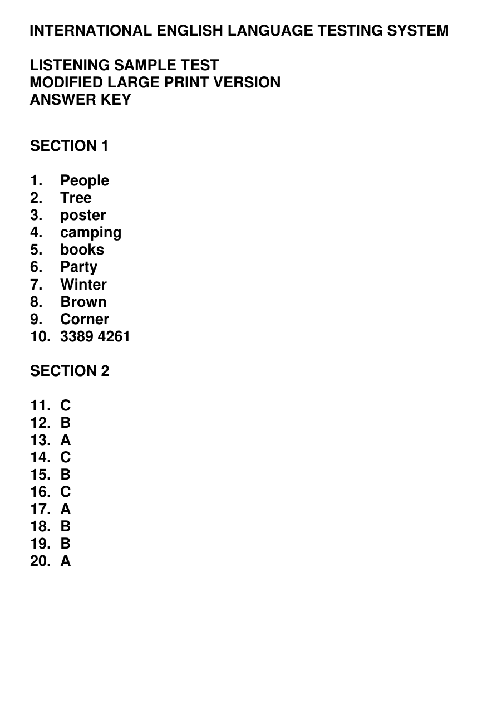
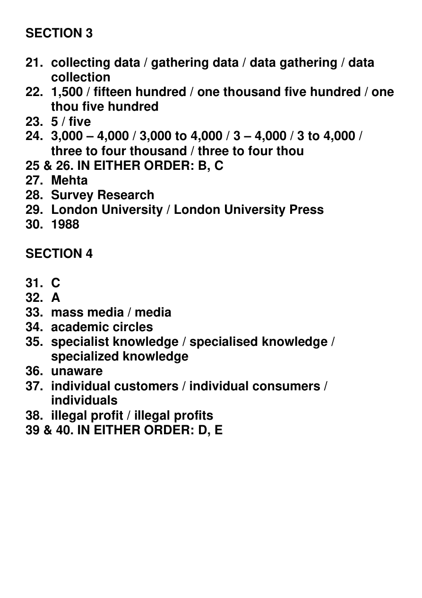

<!doctype html><html lang="zh-CN"><meta charset="utf-8"><meta name="viewport" content="width=device-width"><meta http-equiv="Content-Security-Policy" content="default-src 'none'; img-src 'self'; style-src 'unsafe-inline'"><title>IELTS · 答案</title><style>body{margin:0;background:#e7ece3;color:#244b37;font:18px "Segoe UI","Microsoft YaHei",sans-serif}header{position:sticky;top:0;background:#edf2e9ed;padding:15px 24px;border-bottom:1px solid #c9d4c2;backdrop-filter:blur(8px)}main{max-width:990px;margin:20px auto;padding:0 16px}section{margin:0 0 20px}.page{text-align:center;font-size:15px;padding:9px}img{display:block;width:100%;height:auto;background:white;box-shadow:0 2px 10px #203b1720}</style><header>IELTS Listening · 答案</header><main><section><div class="page">1 / 2</div></section><section><div class="page">2 / 2</div></section></main></html>